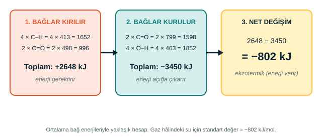

Bölüm 5 · Tepkime
Metanın yanması: tepkime adım adım
Kimyasal tepkimede reaktiflerdeki bağlar kırılır, ürünlerde yeni bağlar kurulur. Doğal gazın ana bileşeni olan metan, havadaki oksijenle yandığında şu tepkime gerçekleşir:
CH4(g) + 2O2(g) → CO2(g) + 2H2O(g) + enerji

| Bağ | Yaklaşık bağ enerjisi (kJ/mol) | Metan yanmasında |
|---|---|---|
| C–H | 413 | 4 bağ kırılır |
| O=O | 498 | 2 bağ kırılır |
| C=O | 799 | 2 bağ kurulur (CO2 içinde) |
| O–H | 463 | 4 bağ kurulur (2 H2O içinde) |
Hesap: Kırılan bağlar 2648 kJ enerji ister; kurulan bağlar 3450 kJ enerji açığa çıkarır. Net değişim 2648 − 3450 = −802 kJ'dür. Negatif işaret, tepkimenin ekzotermik (enerji veren) olduğunu gösterir.
Karşılaştırma: Gaz hâlindeki su için standart değer yaklaşık −802 kJ/mol olduğundan hesap ölçülen değere çok yakındır. Su sıvı hâlde oluşursa açığa çıkan enerji daha fazla olur (yaklaşık −890 kJ/mol).
Neden kibrit gerekir? Metan ile oksijen oda sıcaklığında bir arada durabilir. Tepkimenin başlaması için aktivasyon enerjisi gerekir; kibrit alevi ya da kıvılcım bağları kırmaya yeter. Bağlar kırılınca açığa çıkan enerji tepkimeyi sürdürür.